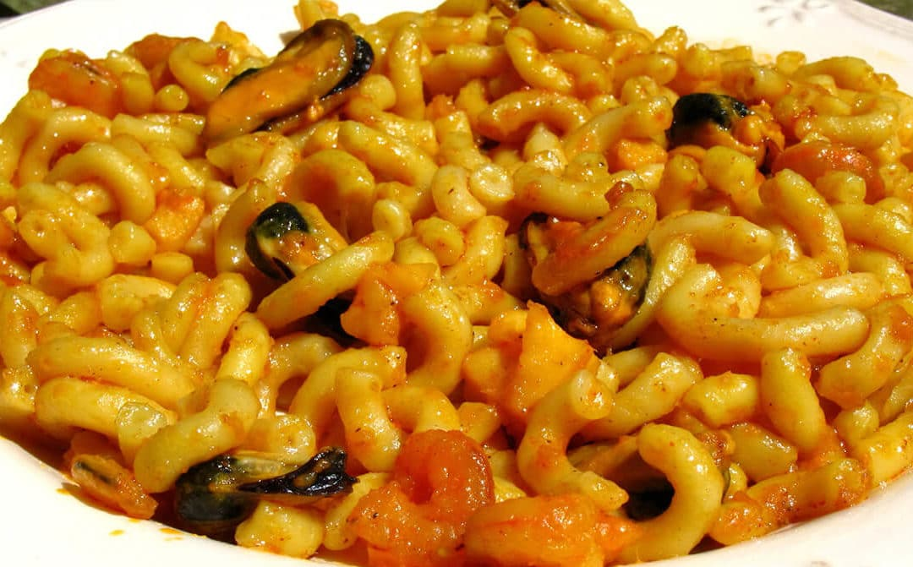

Receta de fidegua casera.

Ingredientes
- 500 gramos de fideos
- fideos gruesos
- 200 gramos de gambas
- colas de gambas
- dientes de ajo
- caldo de pescado
- medio pimiento verde
- medio pimiento rojo
- 8-10 mejillones
Elaboración (pasos)
- troceamos los pimientos, la cebolla y los ajos
- cocemos los mejillones al vapor o al microondas
- ponemos la fidegua a fuego medio
- echamos un poco de aceite y cuando esté caliente doramos los langostinos
- añadimos los pimientos y los freimos (10 min)
- precalentamos el horno (200ºC)
- agregamos el resto de caldo
- pasamos la fidegua al horno (4 min) a (200ºC)
- sacamos del horno
- servir en plato
. Gambas al Ajillo
. Mejillones